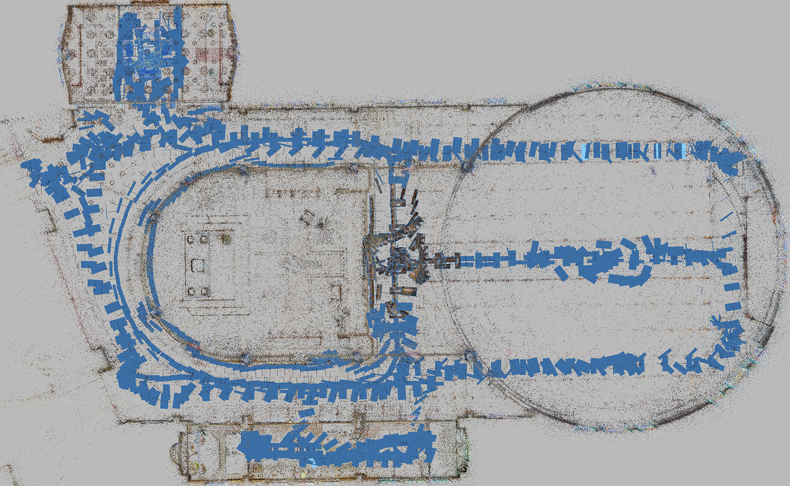
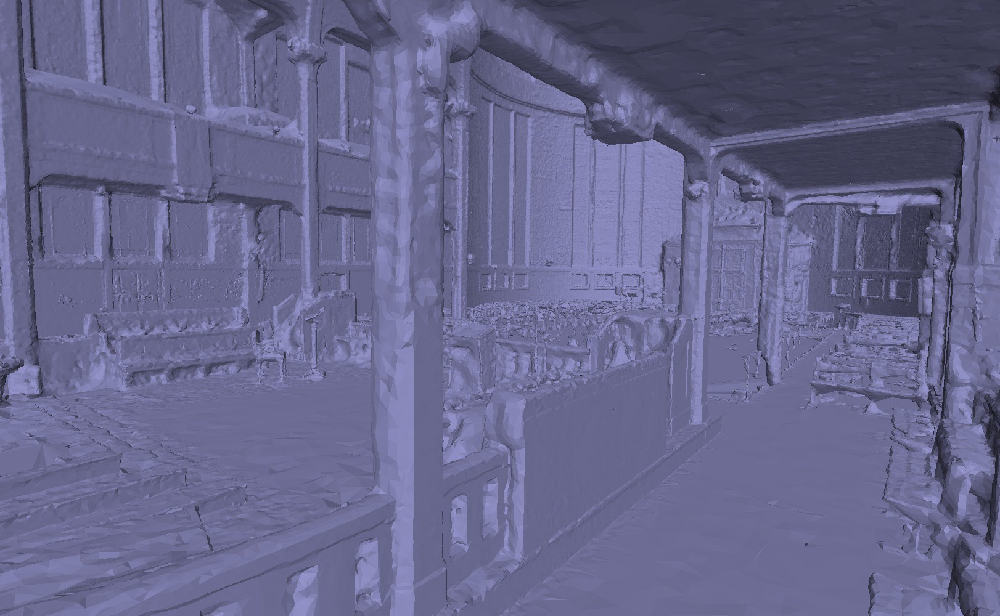
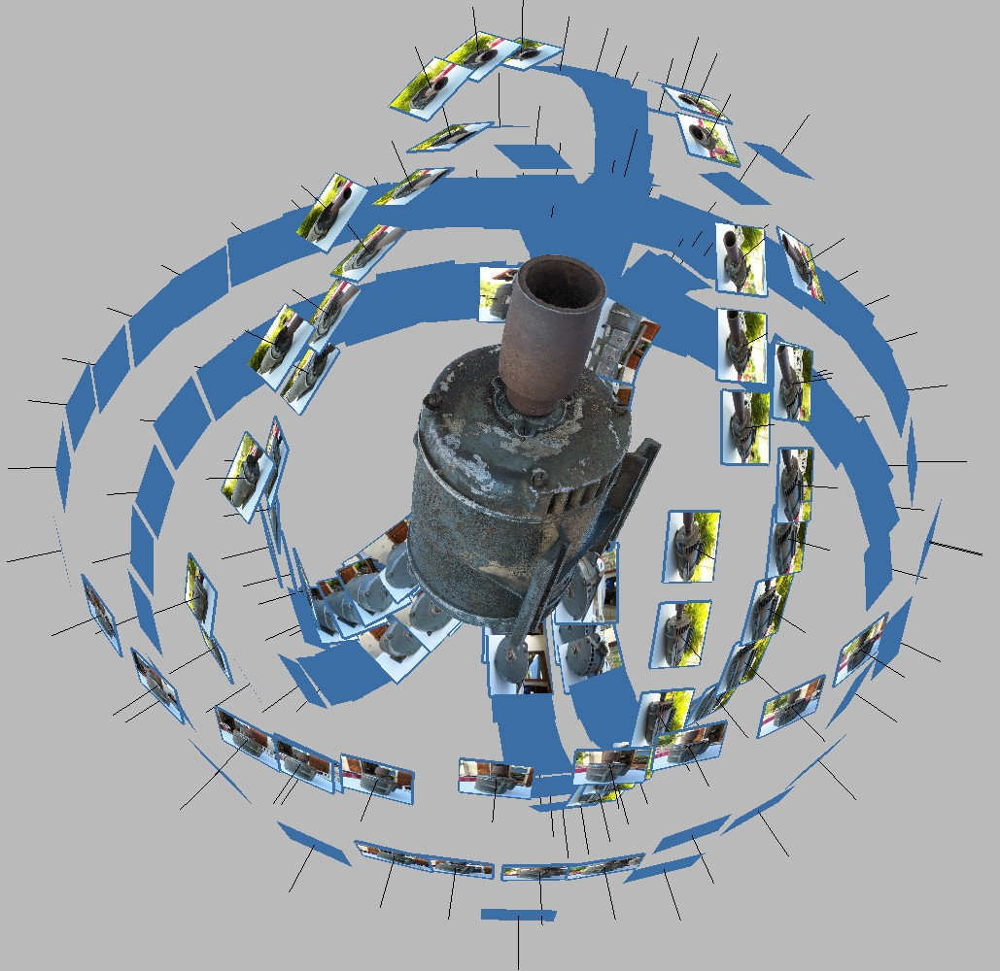
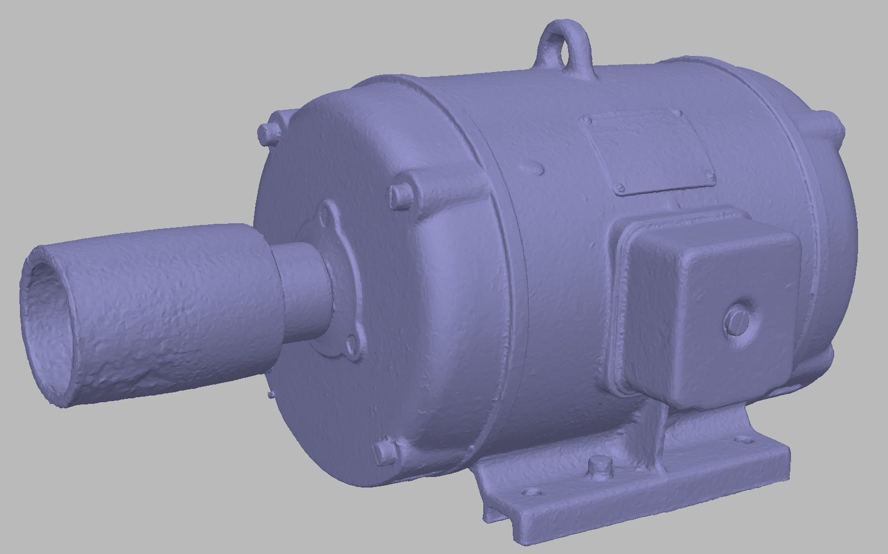
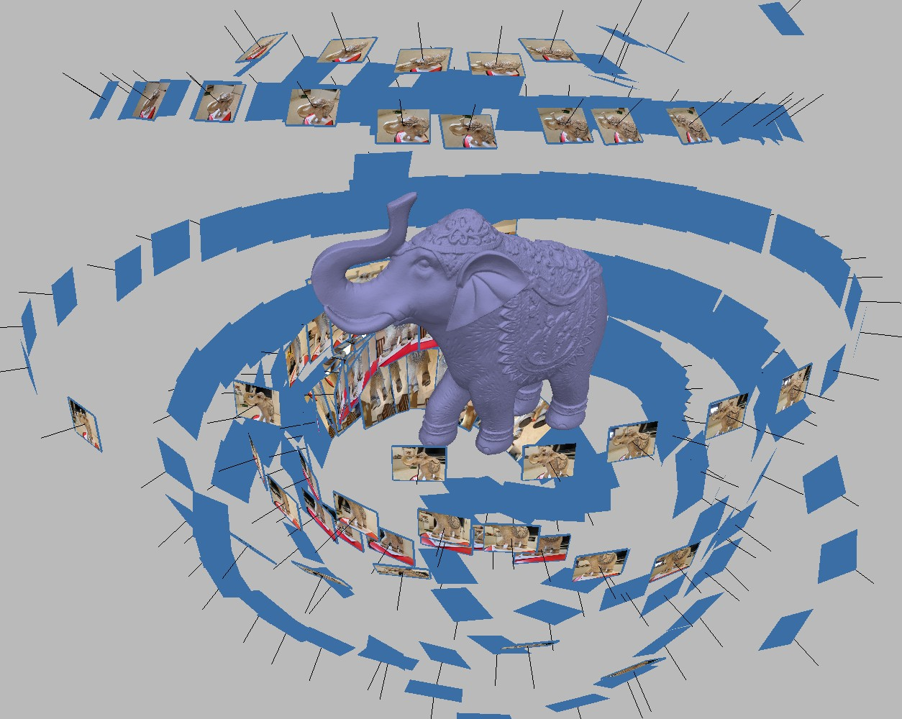
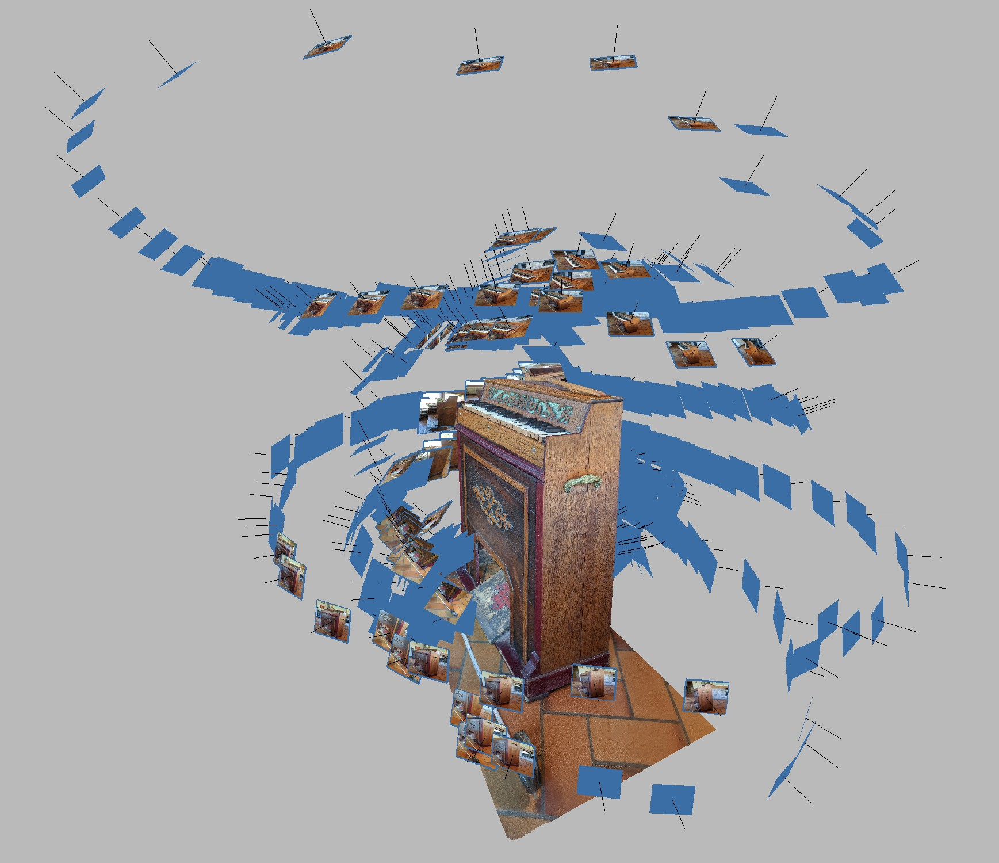
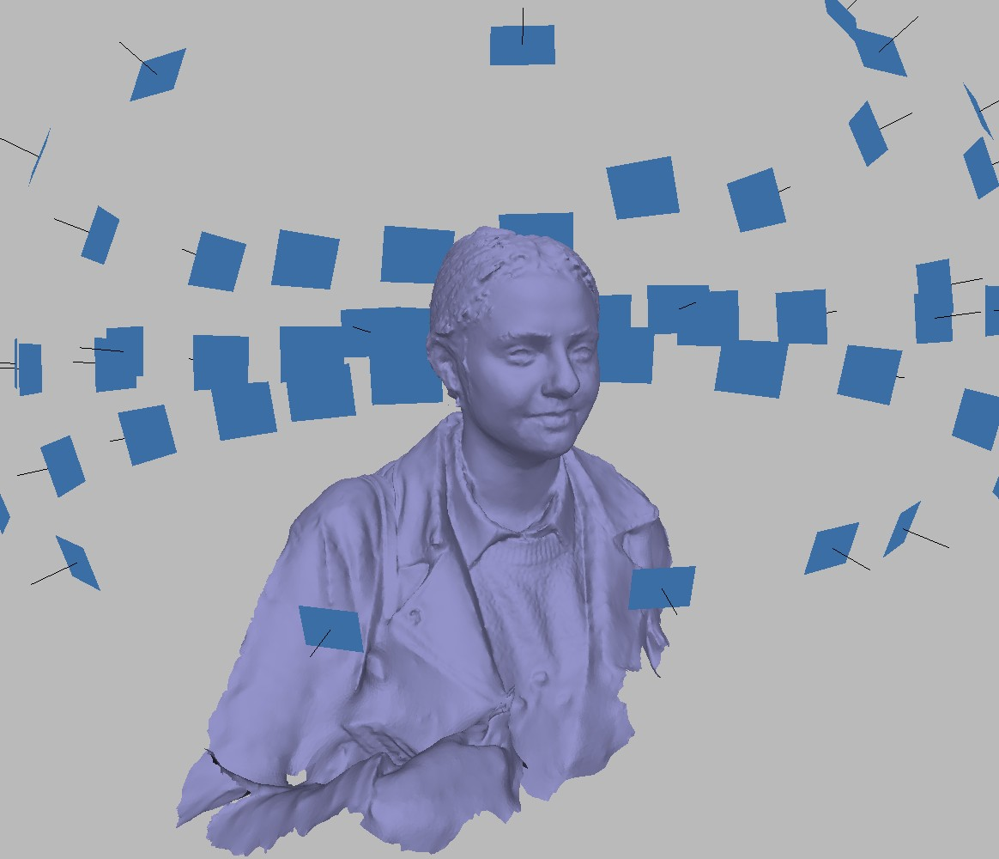
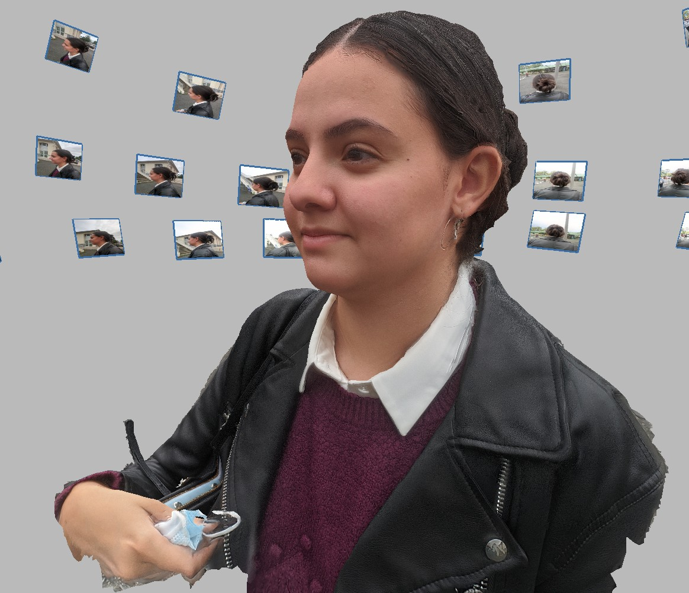
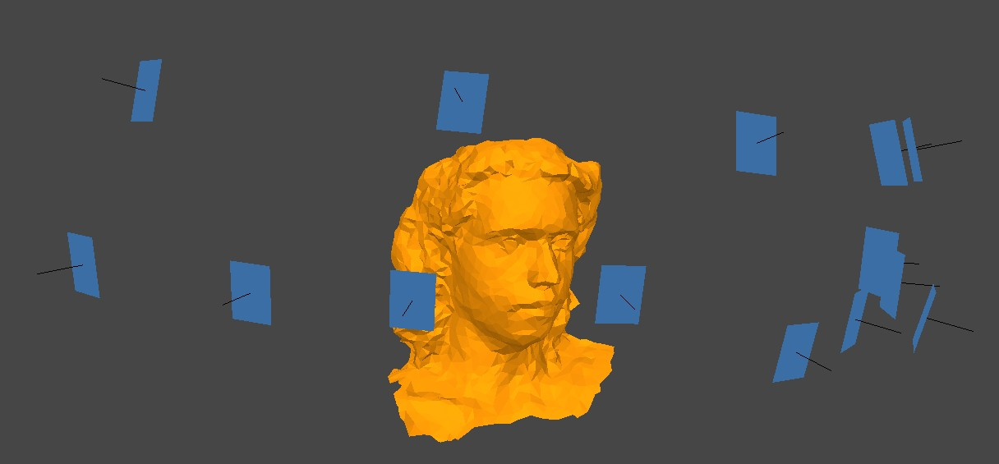
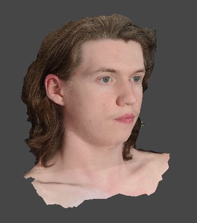

Photogrammétrie
Sommaire
I. Scans de lieux
La photogrammétrie permet d'obtenir une copie digitale d'un lieu ou d'un objet à partir d'une multitude de photos du sujet.
Vers fin 2017, je découvre la photogrammétrie avec la démo "The Lab" en réalité virtuelle.
Mes premiers scans en 2018 on été réalisés entièrement sur téléphone avec l'application
3D Live Scanner.
Puis j'ai appris à me servir d'Agisoft Metashape,
logicel avec lequel j'obtiens tous mes modèles.
Un créateur d'environnement VR a mentionné un de mes scans dans une vidéo, pour son effet "Whoa" et la sensation d'être sur place procurée.
I.i Église Saint-Blaise
1200 photos au téléphone.
 II.ii. Pièces en intérieur
950 photos. Pour tourner en temps réel en VR, j'ai réduit avec blender le nombre de polygones.
Scan à partir de 23 photos 360° (Caméra Mi Sphere)
Si la qualité finale est moins bonne, la captation des images est bien plus rapide et il n'y a pas de risques d'oublier une zone.
I.iii Scans en extérieur
Cet environnements est mon scan le plus téléchargé sur SteamVR Home, avec 15 000 téléchargements.
Serre de Vulcania :
Les scans dans les endroits non clos ou avec des vitres nécéssitent beaucoup de retouches.
La végétation est elle aussi très difficile à scanner, le résultat brut n'est pas exploitable.
II. Topographie MNT et surveillance d'un chantier
Premier scan réalisé avec un drone. Les coordonées gps des photos sont utilisées pour détailler l'élévation de terrain.
J'ai utilisé la photogrammétrie pour immortaliser l'avancement d'une maison en tant que souvenir.
On peut visualiser les stocks de matériaux restants, et la disposition du matériel.
III. Scans autours d'un sujet
Des scans réussis d'un sujet sont intéressants car ils peuvent être intégrés dans une scène 3D pour une animation, un jeux vidéo, ou même un film avec la Virtual Production
III.i Objets
Moteur à courroie
 
Pour réaliser un modèle sous tous ses angles, il faut faire plusieurs sets d'images avec un positionnement de l'objet différent.
Ici trois set ont été utilisés.
Éléphant en bois
Cet éléphant fait parti de mes modèles les plus soignés.
Harmonium
Pour dimensionner le modèle correctement, il faut mesurer une distance que l'on reporte dans le logiciel.
III.ii Personnes
Scans improvisés
   
Les visages sont très compliqués à scanner, il faut au moins une trentaine d'appareils photo en simultané pour éviter tout mouvement.
En revanche, j'ai eu beaucoup de chance puisque mon amie est restée immobile le temps de prendre 60 photos.
J'ai retouché le model pour enlever les creux et le rendre plus naturel.
Les scans en selfie sont beaucoup moins précis.